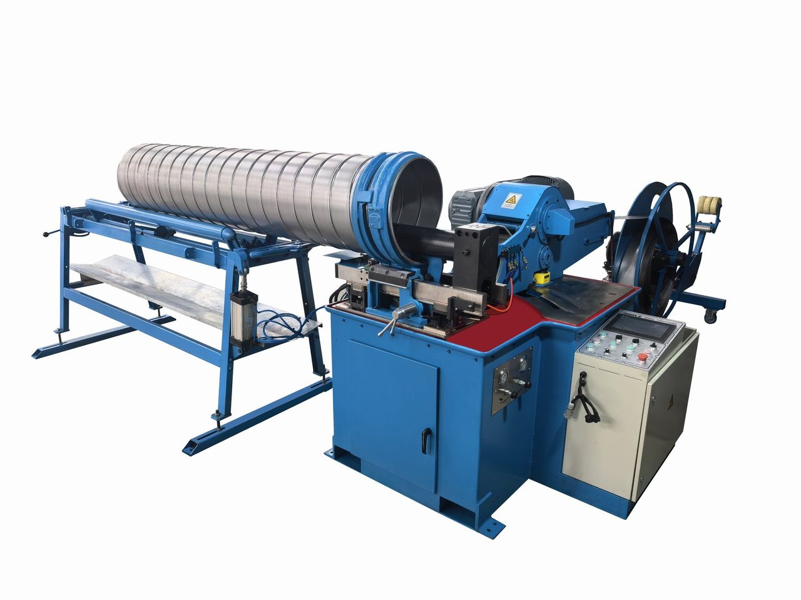
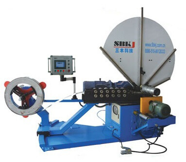
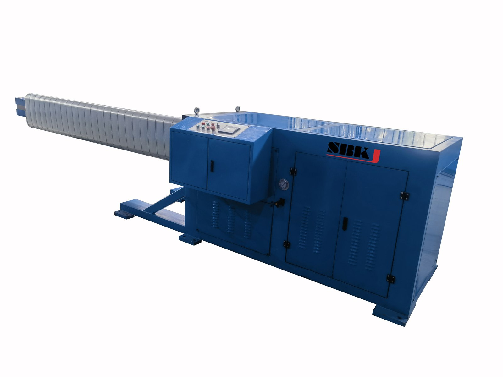
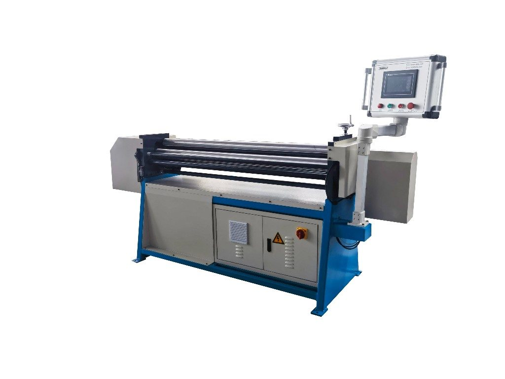

Round duct fabrication
Spiral Duct Tubeformers and Round Duct Equipment
Spiral tubeformers from Φ80 to Φ2000 mm, plus ovalizers, flanging machines and gore-lockers for round and flat-oval duct.
Overview
Spiral round duct has taken over modern HVAC design because it moves more air with less pressure drop than rectangular duct, is faster to install and carries a cleaner aesthetic for exposed-ceiling commercial spaces. SBKJ spiral tubeformers, grouped under the SBTF series, form continuous spiral lockseam pipe from coil stock in diameters from Φ80 mm all the way up to Φ2000 mm. A flying shear or saw-blade cutting head cuts to length without stopping the line, giving you a clean cut-off at full production speed. We ship the SBTF with matching auxiliary equipment from the same family — ovalizers for flat-oval duct, round flanging machines, hydraulic or electric gore-lockers for segmented elbows, and corrugated spiral pipe machines for decorative or light-industrial applications. Buyer profile: HVAC contractors doing exposed-ceiling commercial work, spiral duct specialists, dust collection installers, and fabricators who need to offer both rectangular and round duct from a single shop. Every SBTF machine is commissioned under Factory Acceptance Test at our Jiangyin factory before shipment.
Machines in this category
Click any machine to view full specifications, video and datasheet.

Spiral Tubeformer SBTF-2020
Φ80-Φ2000 mm, heavy-duty flying shear

Spiral Tubeformer SBTF-1602
Φ80-Φ1600 mm, flying shear flagship

Spiral Tubeformer SBTF-1500C
Φ80-Φ1500 mm, compact layout

Spiral Tubeformer SBTF-1500
Φ80-Φ1500 mm, saw-blade cutting

Metal Corrugated Spiral Pipe Machine
Decorative / light-industrial variant

Ovalizer SBHT-3100
Rounds spiral pipe into flat-oval cross-section

Oval Roller SBOR-1.2x1500
Flat-oval duct rolling machine

Gorelocker SBEM-1250
Hydraulic gore-locker for 100-1,250 mm elbows
Specifications at a glance
Compare the flagship models in this category. Full specifications are on each individual product page.
| Model | SBTF-2020 | SBTF-1602 | SBTF-1500 | SBTF-1500C |
|---|---|---|---|---|
| Diameter range | Φ80-Φ2000 mm | Φ80-Φ1600 mm | Φ80-Φ1500 mm | Φ80-Φ1500 mm |
| Material thickness | 0.4-1.5 mm | 0.4-1.5 mm | 0.4-1.2 mm | 0.4-1.2 mm |
| Coil width | 137 mm std. | 137 mm std. | 137 mm std. | 137 mm std. |
| Cutting | Flying shear | Flying shear | Saw-blade | Saw-blade |
| Max speed | ~55 m/min | ~55 m/min | ~40 m/min | ~40 m/min |
| Motor power | 15 kW | 11 kW | 7.5 kW | 7.5 kW |
How to choose
Diameter is the first filter. If your largest run exceeds Φ1600 mm, only the SBTF-2020 reaches Φ2000 mm — pick it. For the most common Φ80-Φ1600 mm working range, the SBTF-1602 is the shop workhorse and what we ship most often. Below Φ1500 mm, the SBTF-1500 and SBTF-1500C are cost-optimised alternatives. Second, choose between flying shear and saw-blade cutting: flying shear cuts at full production speed so throughput is higher and cut edges are burr-free, while saw-blade cutting costs less and handles heavier wall thickness with more forgiving maintenance. Third, consider which auxiliary equipment you need simultaneously — if your projects include flat-oval runs, budget the ovalizer at the same time since retrofitting later means downtime. If you produce segmented elbows in volume, add a gore-locker (SBEM hydraulic or SBWT electric) to close the loop between straight pipe and fittings in-house.
Standards and compliance
SMACNA HVAC Duct Construction Standards (round duct section), EN 12237 (round duct ventilation), AS/NZS 4254, and ASHRAE 90.1 for leakage class. SBTF machines produce spiral lockseam pipe that meets leakage Class A/B under normal operation.
Frequently asked questions
What is the difference between flying shear and saw-blade cutting?
Flying shear uses a circular blade that travels with the pipe and cuts it in motion, so the line never stops. The result is burr-free, production-rate cuts with higher throughput. Saw-blade cutting stops the pipe briefly for each cut, which lowers throughput but is more tolerant of heavier gauges and has a lower upfront cost. For projects over Φ1500 mm, we recommend flying shear.
Can SBTF tubeformers run stainless steel?
Yes, with a dedicated tool set. SBTF machines are commonly run with 304/316 stainless up to 1.0 mm for pharmaceutical, food and chemical exhaust applications. Tell us at order stage so we ship the appropriate hardened rollers and lubrication.
How big is the footprint of an SBTF-1602?
The machine itself is approximately 6 m long by 2 m wide. We recommend a working bay of roughly 12 m x 4 m to accommodate coil loading, finished pipe handling and maintenance access. Full GA drawings are provided during quotation.
Do you supply the coil as well?
No — SBKJ supplies only the machinery. We can recommend coil suppliers in your region and provide coil specifications (width, thickness, yield, surface finish) based on your expected production mix.
Workshop integration patterns
Spiral duct machinery occupies a dedicated bay separate from the rectangular duct line because the workflow is fundamentally different. A typical SBTF-1602 cell has a 5-tonne uncoiler at the upstream end, the spiral former in the middle, and a flying-shear or saw-blade cut-off at the downstream end. Finished spiral duct rolls onto a run-out table for length verification before going to flanging or directly to packing for export. SBKJ also supplies the downstream stations — spiral duct flanging machines, elbow makers, gore-lockers, ovalizers — as matched modules so the entire round duct workflow can be specified in a single quotation.
Buyer playbook
Spiral duct buyers are typically commercial HVAC fabricators supplying ductwork to mall, airport, hospital, and high-rise projects, plus a smaller share of dust-extraction and industrial-ventilation specialists. The decision criterion that matters most is the diameter envelope — the SBTF-1500 covers Φ100–1500 mm and is enough for the vast majority of commercial work, while the SBTF-1602 extends the upper limit to Φ1600 mm and the SBTF-2000 covers up to Φ2000 mm for industrial ventilation and large process exhaust. SBKJ engineers will ask for your duct size mix before recommending the right model.
Related categories
Ready to specify your line?
Send us the project brief — SBKJ engineers respond within 12 hours with a sized quotation and GA drawing.
Get a quotation in 12 hoursPage reviewed by SBKJ Engineering & QA · Last verified